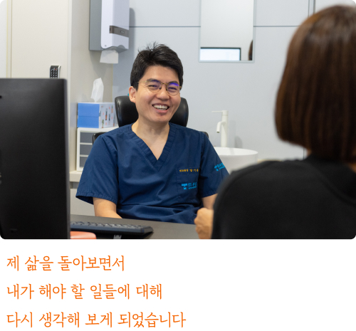
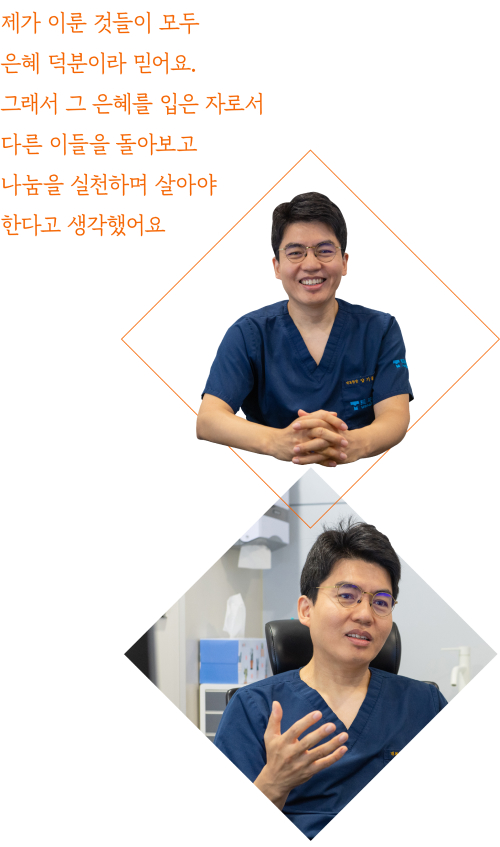
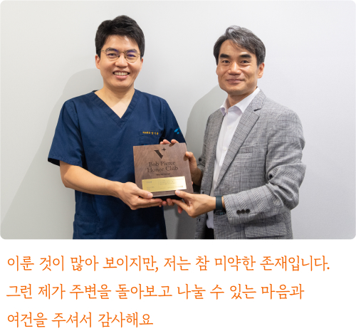

2022년부터 월드비전을 통해 300명의 해외 아동을 후원하고 있는
트루맨 병원의 대표원장 양기훈. 뜨거운 여름이 시작되던 6월, 양기훈 후원자님의
작은 진료실에서 후원자님을 만났습니다. 한 시간 남짓 이어진 대화 속에서 전해진
후원자님의 이야기는 선하고 단단했습니다.
2022년부터 월드비전을 통해 300명의 해외 아동을
후원하고 있는 트루맨 병원의 대표원장 양기훈.
뜨거운 여름이 시작되던 6월, 양기훈 후원자님의 작은
진료실에서 후원자님을 만났습니다. 한 시간 남짓
이어진 대화 속에서 전해진 후원자님의 이야기는
선하고 단단했습니다.
내 삶을 돌아보며 결심한 나눔
내 삶을 돌아보며 결심한 나눔
월드비전과의 인연을 묻자 양기훈 후원자님은 삶을 돌아보게 된 이야기 먼저 들려주었어요. “사람이 살다 보면 목표를 향해 열심히 달려가잖아요. 저도 그렇게
열심히 살아왔어요. 그러다 어느 정도 목표를 달성하고 나니 좀 허무해지는 순간이 있더라고요. 내가 이룬 것들이 다 나의 열심만으로 된 것이 아니라는 생각이
들었어요. 그렇게 제 삶을 돌아보면서 내가 해야 할 일들에 대해 다시 생각해 보게 되었습니다.”

월드비전과 후원아동 300명과의 만남은 이렇게 시작되었습니다. “나눔을 실천하며 자신의 역할을 하고 있는 분의 유튜브 영상을 보고 나 자신에 대한 반성을
했어요. 그리고 저는 크리스천이거든요. 제가 이룬 것들이 모두 은혜 덕분이라 믿어요. 그래서 그 은혜를 입은 자로서 다른 이들을 돌아보고 나눔을 실천하며
살아야 한다고 생각했어요. 월드비전이야 워낙 큰 기관이니까 잘 알고 있어서 결심하고 바로 전화를 드렸던 것 같아요.”
후원, 그저 흘러가는 삶의 부분
후원, 그저 흘러가는 삶의 부분
나눔이 그의 삶에 어떤 의미인지 묻자, 그는 담담히 대답했습니다. “후원을 시작할 때는 열정이 넘쳤는데 지금은 점점 일상이 되어가는 것 같아요. 일이 바쁘다
보니 이전만큼 관심을 못 기울일 때도 있지만, 아이들의 변화 소식을 들으면 기쁘고 즐거워요. 인터뷰한다고 하길래 왜 후원을 시작했는지 다시 생각해봤어요. 많은
생각이 오고 갔지만, 결국 자연스럽게 흘러간 과정 속에서 후원이 제 일상의 일부가 되었더라고요.”

양기훈 후원자는 월드비전 고액 기부자 클럽인 밥피어스아너클럽 회원이 되었지만 이 역시 사명을 다하고 있을 뿐이라 말합니다. “저는 특별한 취미 생활이 전혀
없어요. 환자를 최선을 다해 진료하고 산책을 하고 기도하며 단순한 일상의 평화 안에 살려고 노력해요. 이렇게 단순한 일상에서 저는 제 사명을 다하려 노력하는
것뿐이에요.”
*
월드비전 창립자인 ‘밥피어스’의 이름을 딴 고액 후원자 모임. 누적 후원금 1억 원 이상인 후원자 중 다양한 지구촌 문제에 공감하고,
나눔의 가치를 알리는 데 앞장서는 후원자를 회원으로 위촉한다.
월드비전 창립자인 ‘밥피어스’의 이름을 딴 고액 후원자 모임. 누적 후원금 1억 원 이상인 후원자 중 다양한 지구촌 문제에 공감하고,
나눔의 가치를 알리는 데 앞장서는 후원자를 회원으로 위촉한다.

미래에 대한 그의 목표는 단순하고 명확합니다. “뭔가 세상에서 이루겠다는 목표가 이제 특별하게 없어요. 인간적인 욕심이 앞서게 될 때는 늘 마음이 불편했어요.
그래서 저는 그런 본성이 앞서지 않도록 노력하고 있어요. 이룬 것이 많아 보이지만, 저는 참 미약한 존재입니다. 그런 제가 주변을 돌아보고 나눌 수 있는
마음과 여건을 주셔서 감사해요.”
단순하고 평안한 삶은 어떻게 만들어 가야 하는 것인지 답답할 때가 있었습니다. 풀리지 않은 궁금증에 해답을 얻은 것 같던 양기훈 후원자님과의 만남은 잔잔한
울림으로 다가왔어요. 후원자님의 선한 미소가 주는 평안함과 위로가 이 글이 닿는 모든 분들께 흘러가기를 바라봅니다.
write. 월드비전 커뮤니케이션팀 윤지영
photo. 편형철